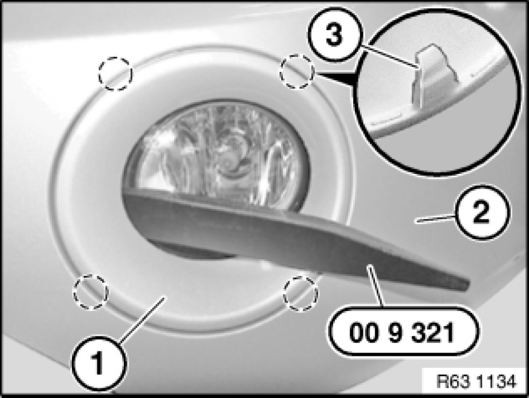
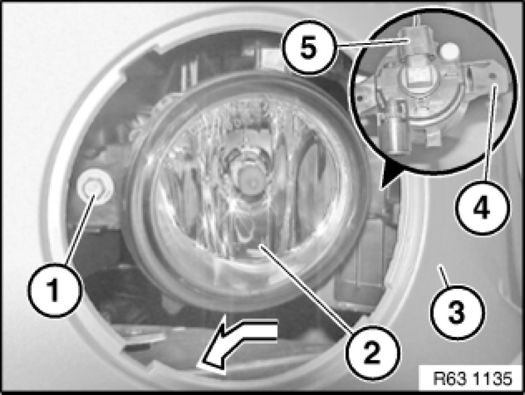

63 17 060 Removing and installing or replacing left or right fog light (after 09/06)
63 17 060 - Removing and installing or replacing left or right fog light (after 09/06)

Special tools required:
- 00 9 321 00 9 310 Assembly Wedges (Set in Plastic Case)

Warning!
Follow instructions for handling light bulbs (exterior lights) Instructions for Handling Light Bulbs (Exterior Lights).

Lever fog lamp trim (1) with special tool 00 9 321 00 9 310 Assembly Wedges (Set in Plastic Case) out of front bumper trim (2).
Installation Note:
Retaining hooks (3) of fog lamp trim (1) must not be damaged.
Make sure fog lamp trim (1) is correctly seated and engaged in front bumper trim (2).

Release screw (1). Tightening torque 63 17 1AZ [1][2]Fog/Driving Lamp.
Feed fog lamp (2) in direction of arrow out of front bumper trim (3).
Disconnect plug connection (5) and remove front fog light (2).
Installation Note:
Feed attachment point (4) first into fog lamp mounting.

Replacement:
Adjust front fog lights Adjusting Fog Lamp (From 09/06).
If necessary, remove bulb Service and Repair.